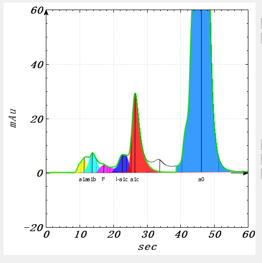
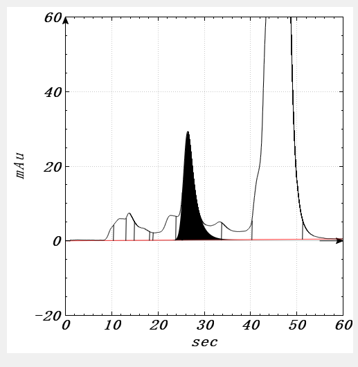
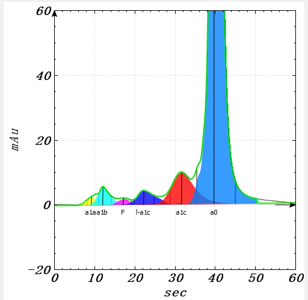
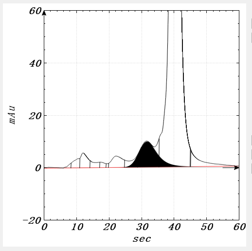
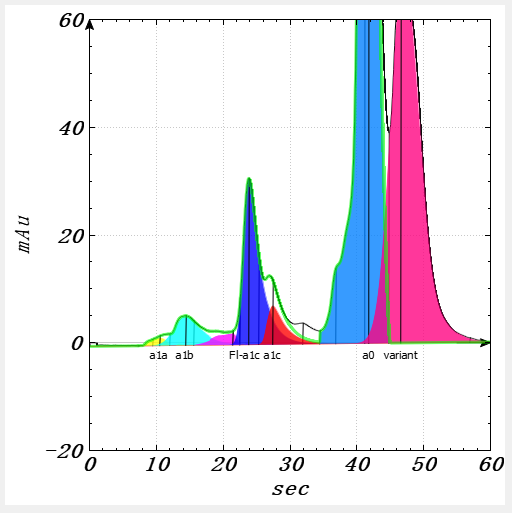
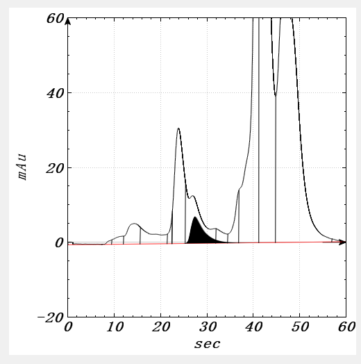
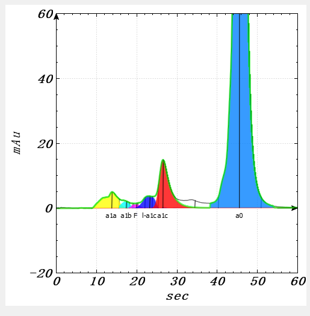
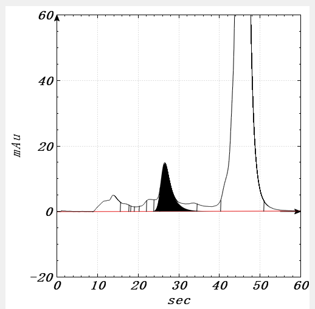

HbA1c Peak Analysis Library
While at Sepax Technologies, I was part of the team of engineers who pioneered our first equipment development project, The GlyHb-100 machine. The purpose of the GlyHb-100 machine is to analyze blood samples for signs of diabetes. Each blood sample takes less than one minute to be tested and has a queue which is able to hold hundreds of samples.
After doing preliminary research for the machine, I took responsibility of the machine's peak analysis. When the machine runs a blood sample through one of our HPLC columns, a chromatograph is formed. By separating the chromatograph into its constituent peaks, we can find the concentration of certain markers in a blood sample. To be easily integrated into the larger project, my library was written in C++ on the Qt framework. This project was very difficult and forced me to grow immensely as a Software Engineer.
Three challenges with this project was:
1. Finding the peak areas accurately (<0.01% room for error)
2. Labeling the peaks with the correct blood marker names
3. Making the library work reliably and NEVER crash
Debugging Graph
What I see |
Output Graph
What the customer sees |
|  |
 |
|  |
 |
|  |
 |
|  |
 |